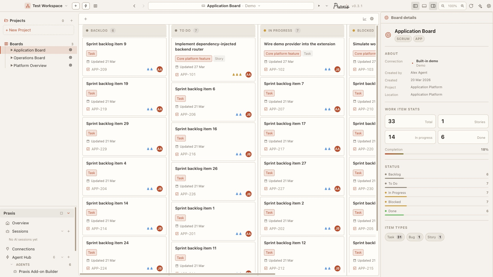
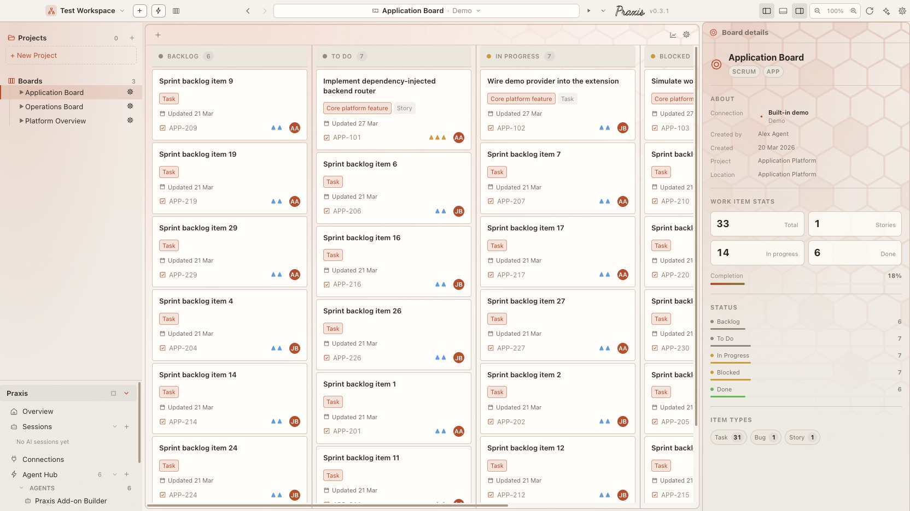
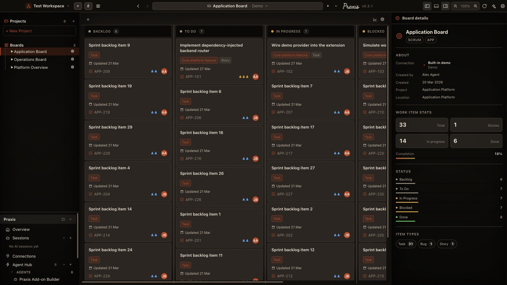

Praxis · Appearance
The material layer
beneath every theme
Surfaces is a fourth theming axis, orthogonal to light/dark, accent, and the
named palettes. A Surface Pack sets only --surface-* custom
properties — texture, panel border, corner radius, canvas wash, translucency —
and never a colour token, so one pack composes cleanly over any theme. All four
rollout phases are now implemented: six built-in packs, a selectable pattern
library, a custom-surface editor, and native OS window vibrancy. Every pack's
figurative layer — the Praxis hexagon watermark, the drafting grid — is chosen
from that library by id, so a new material never means new code. The six packs
below are rendered live from the same CSS the app ships.
Where it stands now · 23 Sep 2026
Each surface, on a real board
The six materials below, rendered today on the same board so they can be compared directly.





- ShippedAll four phases of the plan further down are in; Blueprint ships as a Look (Parchment + grid motif) rather than a separate pack.
Screenshots from Praxis desktop v0.3.1 (today's main) · the rest of this page is the original write-up, kept as it was. New: Praxis on Your Phone.
Orthogonal
Lives on data-surface on the root element. Change your palette and the pack rides along unchanged.
Colour-blind
A pack never defines a colour. It tints borders and washes from the theme's own --accent and --text via color-mix.
Patterns are data
Hexagon, grid, triangle, weave and the rest live in one library. A pack — or a user — picks one by id. New materials need no new CSS.
Flat
No material layer. The app renders exactly as the theme alone defines it — the honest baseline, and where a heavily customised profile is pinned on upgrade.
- —
- none
Parchment
DefaultPaper-fibre grain on every panel and a warm accent-tinted vignette on the canvas. The default Praxis look — soft, tactile, a little analemma of light in the top-left.
- pattern
- hexagon
124px · 7% - panel-tint
- warm radial
+ linear wash - texture-opacity
- 0.22
- texture-blend
- soft-light
- panel-border
- border 62%
+ accent 20% - accent-glow
- inset top
hairline - radius-boost
- 2px
--surface-panel-opacity · --surface-panel-blur
Graphite
Anisotropic brushed-metal micro-texture and a border pulled toward the ink. Cool and precise — it reads strongest over the GitHub, Xcode, and Rider palettes.
- pattern
- triangle
62px · 7% - panel-tint
- cool top +
deep bottom - texture-opacity
- 0.24
- texture-blend
- overlay
- panel-border
- border 50%
+ text 22% - accent-glow
- 1px bevel +
26px drop - radius-boost
- 1px
--surface-accent-glow (1px ring) — token is set now, no shell reads it yet.
Blueprint
A two-tier drafting grid on the canvas, tinted from the accent; panels stay clean and fully opaque so text contrast is untouched. Reads as an engineering workspace.
- pattern
- grid
104px · 30% - rule
- major + 3
minor - panel-tint
- vellum
wash - panel-opacity
- 0.96
- texture-opacity
- 0 (grain
off)
Aurora Glass
GlassFrosted translucent panels, an accent glow on the pane edges, and a slow blurred gradient drifting behind the shell. Degrades to faux-depth everywhere; uses native OS window blur where the platform supports it.
- pattern
- hexagon
150px · 9% - panel-opacity
- 0.52
- backdrop
- blur 26px
saturate 1.6 - accent-glow
- bevel + ring
+ 30px bloom - shell canvas
- bright accent
gradients - ambient
- blurred cloud,
28s drift - radius-boost
- 4px
prefers-reduced-transparency flip a
data-translucency attribute that collapses every value here to
opaque — the pack carries literal backdrop-filter values because
Chromium drops one built through nested var() + calc().
Noir
Dark onlyCoarse film grain across the panels, a hard vignette closing in from top and bottom, borders pulled toward black. The Settings gallery hides this pack under a light theme.
- pattern
- none — grain
carries it - panel-tint
- 2× black
vignette - texture-opacity
- 0.30
- texture-blend
- overlay
- accent-glow
- 60px inset
vignette - panel-border
- border 30%
+ #000 45%
supports: ['dark'] — the gallery filters this pack out whenever
data-mode is light, and the contrast guard only samples it in dark.
Where the build stands
Honest about the current state
- Patterns are a library, selected as data.
surfacePatterns.tsholds eight seamless tiles — hexagon, grid, dot-grid, triangle, diagonal, weave, topographic, none — each able to draw itself at any ink and stroke weight. A pack declarespattern: { id: 'hexagon', scale: 124, opacity: 0.07, ink: 'accent' }andapplySurfacePackrenders it into--surface-watermark-*. The custom editor exposes the same list as a dropdown, so a user changes the material with no code. Ink is re-baked from the live theme on every palette change, because adata:URI cannot carry avar(). - A CSP was hiding every texture. The renderer shipped
default-src 'self'with noimg-src, so alldata:SVGs were silently blocked — computed styles were correct and nothing painted, which is why the packs looked alike however they were tuned. Fixed withimg-src 'self' data:; a test now decodes the live tile throughImage()so this cannot regress quietly. - The material lives on the panels, not the canvas. The app's three panes tile the whole window, so a body-level background is never seen. Every pack's colour, grain, grid and vignette ride on
--surface-panel-tint-layer— a wash painted over the panel fill but behind the content, and the grain::afternow sits behind content too (children lifted toz-index: 1). Text contrast is untouched at any strength. - Textures are photographic WebP now, not placeholders.
--surface-texture-image: url(…)resolves to a real seamless tile per pack — paper-fibre for Parchment, brushed-metal for Graphite, frost for Aurora Glass, film-grain for Noir — each shipped at1x/2xunderrenderer/src/assets/surfaces/. Blueprint carries no grain by design; its pattern is the procedural drafting grid, not a raster tile. - Translucency is live.
.pane-sidebar/.pane-main/.pane-aux/.titlebarfold their fill through--surface-panel-opacityviacolor-mix; Aurora Glass drops panels to 0.52 over a bright accent-lit.shelland frosts the sidebar withbackdrop-filter. Flat / Parchment / Graphite / Blueprint keep opaque panels; Flat stays a byte-for-byte no-op. - Overlays never touch interaction. Grain and ambient layers are
::after/::beforewithpointer-events: none, scoped byisolation: isolate. Dialogs render outside the panes and are never textured or frosted. - Accessibility respected.
prefers-reduced-transparencyforces the translucency gate off (glass → opaque); the ambient Aurora layer is transform-only, runs only underprefers-reduced-motion: no-preference, and pauses when the window loses focus. - Migration is settled. An untouched pre-feature profile adopts Parchment on upgrade; a profile with a customised theme or priority colour is pinned to Flat so nobody's tuned look shifts under them.
Shipped
All four phases
Token layer + opaque packs
The data-surface axis, inert --surface-* tokens, the theme.css refactor, migration rule, Settings gallery + Intensity / Texture dials. Ships Flat, Parchment (default), Graphite, Blueprint.
Translucency + 2 glass packs
The color-mix panel-opacity path, sidebar / titlebar backdrop-filter, the data-translucency gate, reduced-transparency + reduced-motion guards, the ambient Aurora layer. Ships Aurora Glass and Noir, GA.
Native window vibrancy
platformSupportsVibrancy(), window:setSurfaceVibrancy IPC, transparent BrowserWindow + vibrancy / backgroundMaterial at launch, data-vibrancy transparent-root CSS with macOS shadow / corner recovery. Linux + pre-22H2 Windows fall through to Phase 2.
Custom surface editor
Dials → a validated --surface-* token map, Export / Import JSON, per-card edit. applySurfacePack applies a custom pack inline and derives its backdrop. Marketplace list deferred.